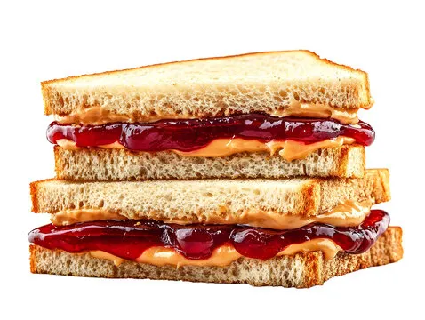

Home

Peanut Butter & Jelly Sandwich
Peanut butter and jelly: a divine union of roasted legume gold and jewel-toned fruit nectar, pressed between two clouds of glutenous perfection. It’s not just a sandwich—it’s an edible sonnet, a culinary mic drop echoing through the halls of snack-time eternity.
Recipe
Prep Time: Depends on your indecisivenes
Cook Time: Zero, because we don’t cook here
Ingridents
- 2 slices of bread (preferably not stale, but you do you)
- 1 glob of peanut butter (smooth, crunchy, or chaotic neutral)
- 1 generous splat of jelly (grape, strawberry, or mystery flavor)
- Optional: dignity
Instructions
- Lay out two slices of bread like you’re preparing them for a tiny carbohydrate wedding.
- Slather one side with peanut butter until it looks like a crime scene from a nut-based thriller.
- Apply jelly to the other slice—don’t be shy, this is a judgment-free sticky zone.
- Smash the two halves together like you’re mediating a sweet, squishy conflict.
- Slice diagonally if you’re fancy. Leave whole if you’re chaotic.
- Devour while standing over the sink, contemplating your life choices.
Pro tip: If jelly squirts out the sides, congratulations—you made it correctly.